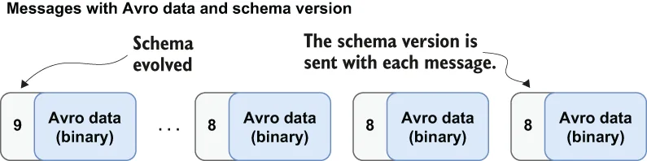

Every SchemaInfo object stored with a topic has a version associated with it. When a producer publishes a message using a given SchemaInfo, the message is tagged with the associated schema version, as shown in figure 7.5. Storing the schema version with the message allows the consumer to use the version to look up the schema in the schema registry and use it to deserialize the message.
随主题存储的每一个 SchemaInfo 对象都有一个与之关联的版本。当生产者使用某个给定的 SchemaInfo 发布消息时，这条消息就会被打上对应 schema 版本的标记，如图 7.5 所示。把 schema 版本随消息一起存储，消费者就能用这个版本去 schema registry 中查出相应的 schema，并用它来反序列化该消息。

Figure 7.5 When using the Schema Registry, Avro messages would contain a schema version rather than the entire schema description. Consumers will use the schema version to retrieve the proper deserializer based on the version.
图 7.5 使用 schema registry 时，Avro 消息中携带的是一个 schema 版本号，而不是完整的 schema 描述。消费者会依据该 schema 版本去取得与版本匹配的反序列化器。
This is a simple and efficient way to associate the Avro schema with each Avro message without having to attach the schema’s JSON description. The schemas are versioned in increasing order (e.g., v1, v2, ..., etc.), and when the first typed consumer or producer with a schema connects to a topic, that schema is tagged as version 1. Once the initial schema is loaded, the brokers are provided the schema info for the topics they are serving and retain a copy of it locally for schema enforcement.
这是一种把 Avro schema 与每条 Avro 消息关联起来的简单而高效的方式，无需附上该 schema 的 JSON 描述。各个 schema 按递增顺序编号（例如 v1、v2……等等），当第一个带 schema 的带类型消费者或生产者连接到某个主题时，那份 schema 就被标记为版本 1。初始 schema 加载完成之后，broker 会拿到自己所服务主题对应的 schema 信息，并在本地保留一份副本，用于执行 schema 强制校验。
Within a messaging system such as Pulsar, messages may be retained for an indefinite period of time. Consequently, some consumers will need to process these messages with older versions of the schema. Therefore, the schema registry retains a versioned history of all the schemas used in Pulsar to serve these consumers of historical messages.
在 Pulsar 这样的消息系统中，消息可能会被无限期地保留。因此，某些消费者需要使用较旧版本的 schema 来处理这些消息。正因如此，schema registry 会保留 Pulsar 中所用全部 schema 的版本化历史，以服务这些消费历史消息的消费者。